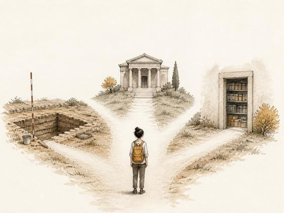

Career session · On request
ASI, Museums and Public Heritage Careers
A 90-minute career session, online or at your venue
Everything we offer / Lecture

A guidance lecture for students choosing what to study
On request
Arranged for your group. Send your preferred dates, group size and location. We adapt the length, level and language, and prepare a quotation. The suggested group size is a guide, not a requirement.
No payment is taken until you approve the plan. Common questions
The lecture sets out what the work involves, which degrees lead to it and where the employment is. Students leave with an outline of courses, entrance routes and first steps, and time is given to their own questions.
Length, level and language are agreed with you. The lecture can be given online or at your venue, for a single class, a department or a whole organisation.
Your goals 22 min
Personal interests, strengths and constraints.
You: goal inventory
Role landscape 45 min
Field, museum, academic, heritage sector differences.
You: career comparison
Pathway plan 23 min
Qualifications, portfolio projects, verified notices.
You: 90-day action plan
Timings are a guide. The plan is confirmed with your quotation.
A personal action plan with dates and checked sources.
Career session · On request
A 90-minute career session, online or at your venue
Career session · On request
A two-hour career session, online or at your venue
Workshop · On request
A hands-on workshop in which students excavate and record a prepared trench
Workshop · On request
A hands-on workshop in shaping pottery and in sorting sherds as archaeologists do